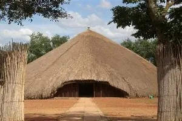
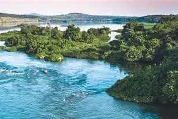
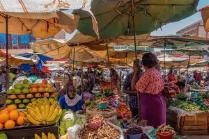
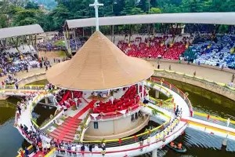
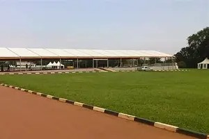

Kasubi Tombs
 Kasubi, KampalaUNESCO World Heritage site and royal burial grounds.
Lake Victoria
 Entebbe RoadAfrica’s largest lake supporting trade and tourism.
Ndere Cultural Centre
NtindaTraditional music, dance, and cultural performances.
Uganda Museum
 Kira Road
Kira Road
The oldest museum in East Africa.
Owino Market
 Downtown KampalaThe busiest commercial market in Uganda.
Namugongo Shrine
 NamugongoReligious site honoring Uganda’s martyrs.
Kololo Grounds
 KololoNational celebrations and historic ceremonies.
Kabaka’s Palace
MengoOfficial residence of the King of Buganda.